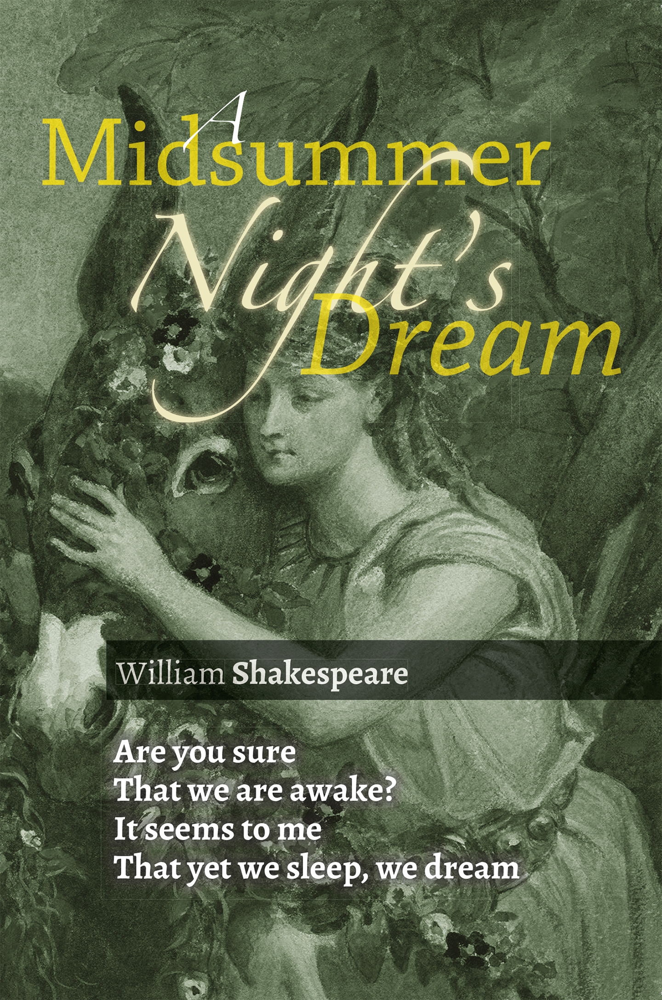

A Midsummer Night’s Dream is Shakespeare’s comedy at it s best. Based upon the quintessential and common theme of love, the play is set in an enchanted forest in a fictional land called Athens. It revolves around the tale of four lovers and an amateur troupe of actors whose lives are encountered and influenced by forest fairies led by their king Oberon and his estranged wife Queen Tatania.
In what appears as its most comical scene, Oberon influences Puck the mischievous sprite to cast a spell on Queen Tatania making her fall in love with one of the minstrels. For good measure, Puck has replaced his head with that of a Donkey’s.